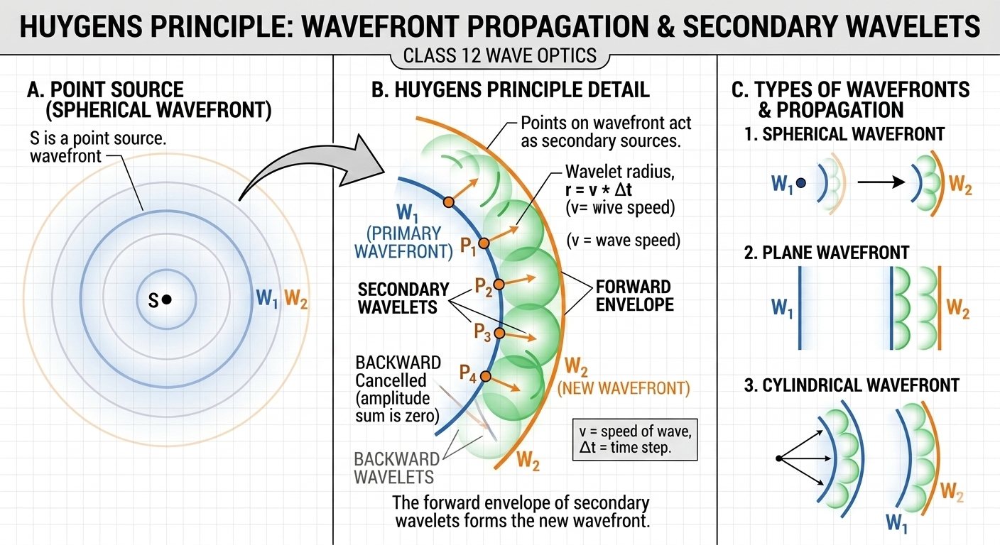
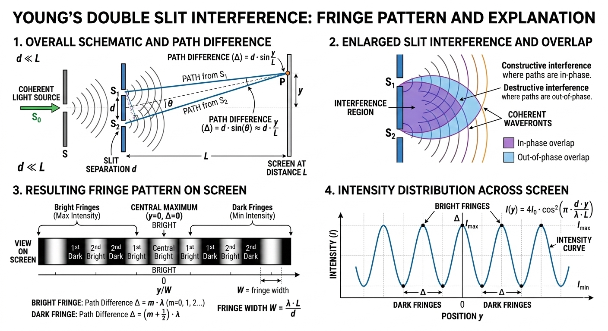
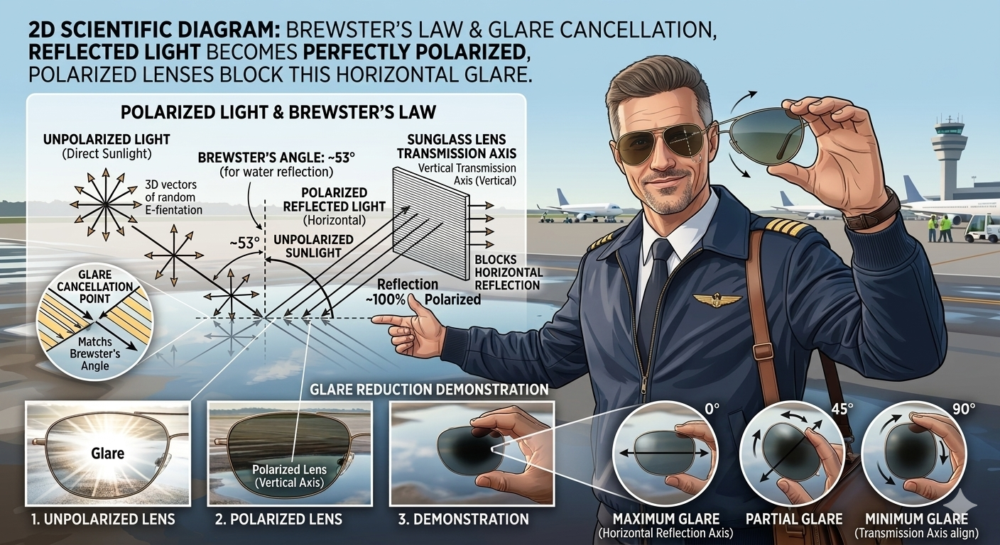

Wave Optics – Maharashtra HSC & CBSE Class 12
Wave optics treats light as a wave. This chapter (NCERT Chapter 10) is vital for HSC board exams (6–8 marks) and carries heavy weightage in JEE Main (2–3 questions) and JEE Advanced. It explains interference, diffraction, and polarization — phenomena that ray optics cannot explain.
Huygens' Principle – The Wavefront Revolution
Every point on a wavefront acts as a source of secondary spherical wavelets. The new wavefront is the tangent to these wavelets.

Young's Double Slit Experiment – Interference Pattern
Coherent sources produce bright and dark fringes. Path difference δ = d sinθ.
Destructive interference (dark): \( \delta = (2m+1)\frac{\lambda}{2} \)

Fringe width \( \beta = \frac{\lambda D}{d} \). This is a favourite JEE numerical topic.
Polarization & Brewster's Law – Real-World Application

Light waves vibrate in all planes. Polarizers allow only one plane. When unpolarized light reflects off a surface at Brewster's angle, the reflected light is completely polarized.
Real-life example: The pilot's polarized aviator glasses cut glare from the cockpit windshield (reflected sunlight) exactly at Brewster's angle — making the view crystal clear and stylish at the same time!
Photoelectric Effect – Particle Nature of Light
Einstein explained that light consists of photons. Energy of photon \( E = h\nu \).

Stopping potential: \( eV_0 = h\nu - \phi \)
Threshold frequency & work function are key for JEE and HSC numericals.